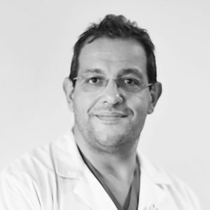

Professore Associato di Urologia
Dipartimento di Scienze Chirurgiche, Oncologiche e Gastroenterologiche (DiSCOG)
Università degli Studi di Padova
Sono Professore Associato di Urologia presso l'Università degli Studi di Padova (www.unipd.it). L'Università di Padova è una delle istituzioni accademiche più antiche del mondo, con oltre 800 anni di storia.
Svolgo la mia attività clinica presso l'Unità Operativa Complessa di Urologia dell'Azienda Ospedale-Università di Padova (www.aopd.veneto.it). Si tratta di un reparto con una lunghissima storia che negli ultimi 4 anni è stato riconosciuto dalle classifiche della rivista americana Newsweek come uno dei migliori reparti di urologia in Europa e il miglior reparto di urologia in Italia (rankings.newsweek.com).
Dal punto di vista clinico, mi occupo della diagnosi, del trattamento e del follow-up delle principali patologie uro-oncologiche, con particolare riferimento alla neoplasia della prostata, della vescica, del rene, dell'alta via escretrice, del testicolo e del pene. Tali trattamenti vengono eseguiti oggi quasi esclusivamente con approccio robotico, sebbene abbia consolidata esperienza di chirurgia laparoscopica per le patologie renali e peniene e di chirurgia open per le neoplasie vescicali e renali avanzate.
Mi occupo inoltre dei trattamenti endoscopici e chirurgici dei pazienti con sintomi del basso apparato urinario da ipertrofia prostatica o sindrome della vescica iperattiva. In ambito ricostruttivo, eseguo il trattamento chirurgico robotico dei prolassi genito-urinari femminili, della malattia del giunto pielo-ureterale e delle stenosi ureterali.
Dal punto di vista didattico, insegno urologia da oltre 10 anni agli studenti del Corso di Laurea in Medicina e Chirurgia e agli studenti di infermieristica delle sedi di Padova e Treviso, nonché ai medici in formazione specialistica di numerose scuole di specialità dell'Università di Padova.
Sul piano della ricerca, ho pubblicato alcune centinaia di articoli scientifici su riviste internazionali indicizzate in lingua inglese. I miei principali campi di interesse sono l'urologia oncologica e funzionale, con particolare attenzione allo studio dei fattori prognostici dei carcinomi della prostata, del rene, della vescica e dell'alta via escretrice, ai risultati della chirurgia robotica applicata all'urologia oncologica e funzionale e al training per la chirurgia robotica.
|
5.000+
Interventi chirurgici
|
700+
Lavori scientifici
↻ aggiornato maggio 2026 · Google Scholar
|
|
20+
Anni di attività clinica
|
103
H-index
↻ aggiornato maggio 2026 · Google Scholar
|
|
10+
Anni di docenza
|
36.000+
Citazioni totali
↻ aggiornato maggio 2026 · Google Scholar
|
Insegnamento di urologia agli studenti del Corso di Laurea in Medicina e Chirurgia della Scuola Medica di Padova, agli studenti di infermieristica della scuola di Padova e Treviso ed ai medici in formazione specialistica di numerose scuole di specialità dell'Università di Padova.
Le principali istituzioni internazionali con cui ho collaborato:
La chirurgia robotica rappresenta oggi uno dei più importanti progressi della medicina moderna. In urologia, questa tecnologia ha trasformato il modo in cui vengono trattate molte patologie, garantendo ai pazienti interventi più precisi, meno invasivi e con tempi di recupero significativamente ridotti.
Il sistema robotico più diffuso al mondo è il sistema Da Vinci, che consente al chirurgo di operare attraverso piccole incisioni — di pochi millimetri — con una visione tridimensionale ad alta definizione e strumenti articolati capaci di movimenti impossibili per la mano umana. Il chirurgo guida il robot in tempo reale da una consolle dedicata, mantenendo il pieno controllo dell'intervento in ogni momento.
Il sistema è composto da tre elementi principali:
Il chirurgo non perde mai il controllo dell'intervento: ogni movimento delle braccia robotiche è una traduzione diretta e precisa dei movimenti delle sue mani. Il sistema filtra automaticamente i tremori involontari e amplifica la destrezza del chirurgo.
La prostatectomia radicale robot-assistita consente di rimuovere la prostata con la massima precisione, preservando i nervi responsabili della funzione erettile e le strutture che controllano la continenza urinaria, con minor perdita di sangue e recupero più rapido rispetto alla chirurgia tradizionale.
La nefrectomia parziale robot-assistita permette di asportare solo la parte di rene colpita dal tumore, conservando il tessuto sano, con tempi di ischemia renale ridotti e migliore funzionalità renale a lungo termine rispetto all'approccio laparoscopico tradizionale.
La cistectomia radicale robot-assistita consente di rimuovere la vescica con minore perdita di sangue, minore necessità di trasfusioni e degenza ospedaliera ridotta. Nei centri ad alto volume è possibile effettuare anche la ricostruzione della neovescica all'interno del corpo del paziente.
L'approccio robotico è impiegato anche nel trattamento della stenosi del giunto pielo-ureterale (pieloplastica), dei prolassi del pavimento pelvico femminile e delle stenosi ureterali complesse, con risultati eccellenti e rapido recupero.
Rispetto alla chirurgia tradizionale a cielo aperto, la chirurgia robotica offre numerosi vantaggi documentati dalla letteratura scientifica internazionale:
Meno perdita di sangueRiduzione del rischio di trasfusioni intraoperatorie.
Incisioni minimeMeno dolore post-operatorio e miglior risultato estetico.
Degenza ridottaRitorno più rapido alle normali attività quotidiane.
Minore rischio infettivoRiduzione delle complicanze della ferita chirurgica.
Maggiore precisioneMigliore preservazione delle strutture nervose e vascolari.
Migliori risultati funzionaliRecupero più rapido di continenza urinaria e funzione erettile dopo prostatectomia.
Risultati oncologici equivalenti o superioriMargini chirurgici positivi ridotti rispetto alla chirurgia open.
Prima dell'intervento, ogni paziente viene valutato in modo approfondito per definire se la chirurgia robotica è l'approccio più adatto alla sua situazione clinica specifica. Non tutte le patologie e non tutti i pazienti sono candidati ideali: la scelta del trattamento viene sempre discussa insieme al paziente, tenendo conto delle caratteristiche della malattia, dello stato di salute generale e delle aspettative individuali.
Dopo l'intervento, la maggior parte dei pazienti può alzarsi e alimentarsi già nelle prime ore, con una degenza media che varia da 1 a 4 giorni a seconda del tipo di procedura. Il follow-up post-operatorio viene pianificato con controlli regolari per monitorare sia i risultati oncologici che il recupero funzionale.
Informazioni per i pazienti sui principali tumori urologici
PSA, biopsia, prostatectomia radicale robotica, radioterapia, terapia ormonale
Disponibile Tumore della VescicaCarcinoma uroteliale, NMIBC, MIBC, TURV, BCG, cistectomia radicale, terapie sistemiche
Disponibile Alta Via EscretriceUTUC, nefroureterectomia radicale, trattamento conservativo, POUT, EV-pembrolizumab
Disponibile Tumore del ReneCarcinoma a cellule renali, classificazione di Bosniak, nefrettomia parziale, trattamento metastatico
Disponibile Tumore del TesticoloSeminoma, non-seminoma, orchifunicolectomia, chemioterapia, sorveglianza
Disponibile Tumore del PeneCarcinoma squamocellulare, staging TNM, organ-sparing, gestione linfonodale, DSNB
DisponibileInformazioni per i pazienti sulle principali patologie urologiche non oncologiche
Sintomi del basso apparato urinario, IPB, terapia medica, chirurgia endoscopica e laser
Disponibile Vescica Iperattiva (OAB)Urgenza, pollachiuria, incontinenza da urgenza, terapia anticolinergica, neuromodulazione
Disponibile Prolassi Genito-urinari FemminiliCistocele, rettocele, prolasso uterino, riparazione chirurgica, mesh, incontinenza urinaria
Disponibile Disfunzione ErettileFisiopatologia, diagnosi, trattamento medico e chirurgico, riabilitazione sessuale post-prostatectomia
Disponibile Patologia ScrotaleIdrocele, varicocele, epididimite, torsione del testicolo, spermatocele
Disponibile Malattia del Giunto Pielo-ureteraleOstruzione del giunto, pieloplastica robotica, tecnica di Anderson-Hynes, follow-up
Disponibile Stenosi UreteraliEziologia iatrogena, ureteroplastica con mucosa buccale, psoas hitch, uretere ileale
DisponibileMateriali delle lezioni per studenti e medici in formazione — Università degli Studi di Padova
📌 I materiali sono riservati agli studenti regolarmente iscritti ai corsi dell'Università degli Studi di Padova.
Lista aggiornata in tempo reale da PubMed — Novara Giacomo
Per informazioni cliniche, collaborazioni scientifiche o didattica
Tel: 049 099 0854
Mail: prenotazioni.liberaprofessione@aopd.veneto.it
Web: www.aopd.veneto.it/attivita-libero-professionale-ambulatoriale
Riferimento pazienti, indicazioni cliniche e modulo di invio
Pagina dedicata ai colleghi →Clinica Urologica, Azienda Ospedaliera di Padova
Via Giustiniani 2, 35128 Padova
DiSCOG — Università degli Studi di Padova
Via Giustiniani 2, 35128 Padova
⚠️ Le informazioni contenute in questo sito hanno scopo puramente divulgativo e didattico. Non sostituiscono in alcun caso il parere del medico specialista. Per questioni cliniche personali, rivolgersi al proprio medico curante o a un urologo.